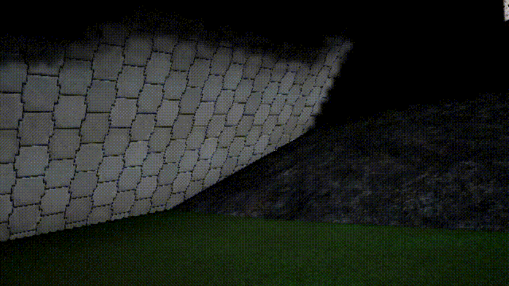
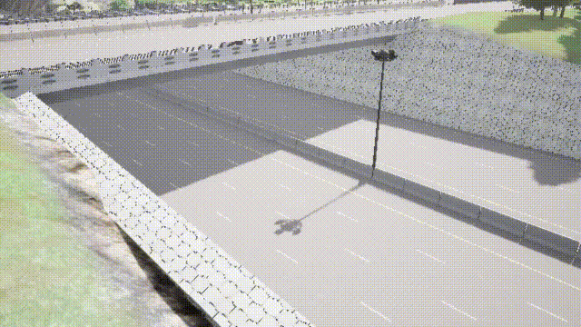
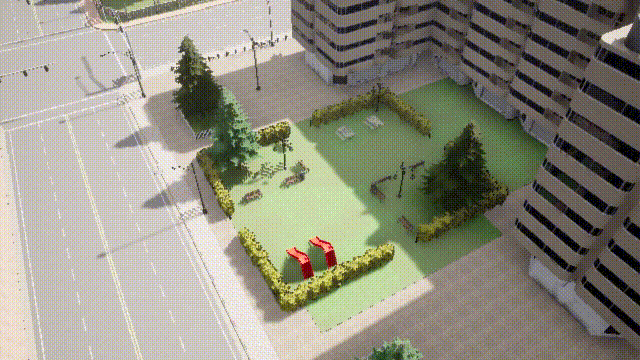
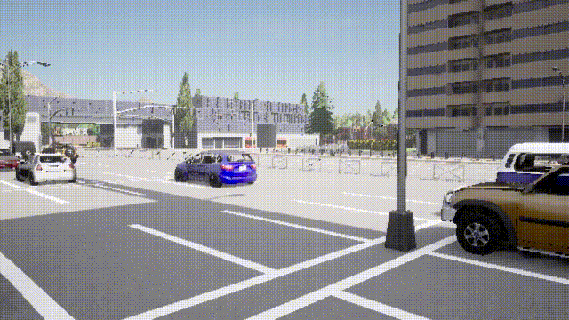
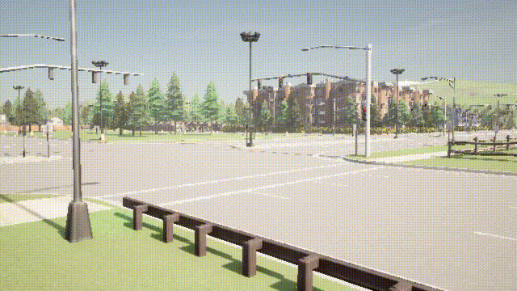

SIGMA
Static Scene Reconstruction via Inpainting and Geometry-first Motion Aggregation for Monocular RGB Videos
16-822: Geometry-based Methods in Vision Fall 2025 Final Project.
TL;DR
SIGMA uses geometry-first motion aggregation to generate reliable masks without learned parameters, applies SDXL-based temporal inpainting to remove moving objects and hallucinate clean backgrounds in seconds, and employs sliding-window VGGT reconstruction to fuse cleaned frames into sharp, stable static 3D scenes. We introduce StaDy4D, a paired dynamic/static CARLA dataset for quantitative evaluation.
Overview
Motion Masks
Inpainting
VGGT

Method
Stage 1: Geometry-first motion masks
- Extract SIFT keypoints from \(I_{t-1}, I_t\), match with FLANN + Lowe ratio, estimate \(F_{t-1,t}\) via RANSAC.
- Compute dense optical flow \(u_{t-1,t}(p)\), warp \(I_{t-1}\) to \(\tilde I_{t-1}\), measure photometric residual \(r_{\text{photo}}(p)\).
- Epipolar residual: \(r_{\text{epi}}(p) = \frac{|x_t^\top F_{t-1,t} x_{t-1}|}{\|(F x_{t-1})_{1:2}\|_2 + \|(F^\top x_t)_{1:2}\|_2 + \varepsilon}\).
- Fuse cues: \(r(p) = \alpha r_{\text{epi}} + (1-\alpha) r_{\text{photo}}\); threshold to mask \(M_t\). Show RGB overlays.
Stage 2: Temporal inpainting
Use previous clean estimate \(\hat I_{t-1}\) as guidance: \(\hat I_t = \text{Inp}(I_t, M_t^{\text{rect}}, \hat I_{t-1})\). Implemented with SDXL inpainting + SDXL-Lightning LoRA (8-step sampling); rectangularized masks to reduce artifacts and preserve sky/ground seams. Show before/after triplets.
Stage 3: Streaming static reconstruction
Sliding-window VGGT: \(\{\mathbf{K}_t, \mathbf{R}_t, \mathbf{t}_t, \mathbf{D}_t, \mathcal{T}\}_{t=1}^T = \text{Recon}(\hat{\mathcal{I}}_{t-w:t})\). Fuse depths/tracks into a single static point cloud/mesh; visualize camera frusta + fused cloud. Incremental fusion keeps memory low.
Data: StaDy4D
StaDy4D is generated directly inside CARLA. Every scripted instruction is replayed twice: once with dynamic agents and once with movers removed, keeping camera intrinsics/extrinsics locked. We export RGB, depth, masks, poses, and intrinsic for each clip.
Data Generation Pipeline
Dual Rendering

Each scene is rendered twice with identical camera parameters: once with dynamic agents and once without.
Clip statistics
| #Scenes | #Clips | Length (s) | FPS | Pedestrians | Vehicles | Camera trajectories |
|---|---|---|---|---|---|---|
| 8 | 20 | 15 | 10 | 80 | 50 | 10 |
Town coverage
| Town | Description |
|---|---|
| T1 | Town near forest |
| T3 | Downtown area |
| T4 | Small town |
| T5 | Urban area |
| T6 | Low-density town |
| T7 | Rural community |
| T10 | Inner-city |
| T12 | Large city map |
Results
Pipeline Visualization
Intermediate and final outputs showing 2D image-space results and their 3D reconstructions.
| Original Frame | Dynamic Mask | Inpainting | Ours | Ground Truth |
|---|---|---|---|---|
 |
 |
 |
No Output Here |  |
 |
No Output Here |  |
 |
 |
Interactive 3D Model
Orbit/zoom the fused static 3D reconstruction.
Qualitative Grid
Dynamic vs static views.
| Scene | View 1 | View 2 | ||
|---|---|---|---|---|
| Static | Dynamic | Static | Dynamic | |
| City 4-1 |  |
 |
 |  |
| City 4-2 |  |  |
 |
 |
| City 5 |  |  |
 |  |
| City 6 |  |
 |
 |  |
Resources
{kind=link}
Citation
@article{
title={SIGMA: Static Scene Reconstruction via Inpainting and Geometry-first Motion Aggregation for Monocular RGB Videos},
author={Henry Tsui*, Ethan Lai* and Yu-Rou Tuan*},
journal={},
year={2025}
}
Contact
Questions? Email henrytsui@email or open an issue on GitHub.